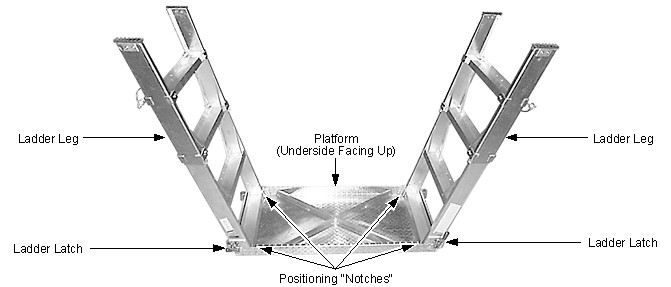
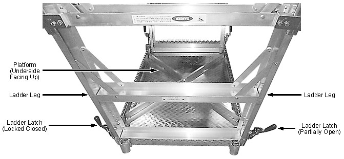
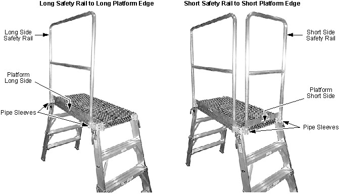

Operating Documentation
Direction 5670000, Rev# 1
Optima MR450w 1.5T Service Methods
Module Version 1.0, Version Date 2/11/08
Operating Documentation |
| Required Persons | Preliminary Reqs | Procedure | Finalization |
|---|---|---|---|
| 1 | Included in 'Procedure' | .5 hour | Included in 'Procedure' |
The Universal Service Ladder-Platform (2319156) is assembled for use at fixed sites according to this Ladder-Platform 2319156 Set-Up procedure. The ladder-platform provides a 24 inch x 45 inch (610 mm x 1143 mm) working platform that can hold 500 pounds (226 Kg) at platform heights of either 40 inch or 50 inch (1016 mm or 1270 mm). All service procedures must be performed from the floor or from the ladder's platform.
| Item | Qty | Effectivity | Part# | Manufacturer | |
|---|---|---|---|---|---|
| Leather gloves; one pair per person | 1 | - | - | - | |
| Standard tools; one kit | 1 | - | - | - | |
| ||||
| Potential Scratches/Cuts | ||||
| The Ladder-Platform may have edges sharp enough to scratch or cut skin. | ||||
| Wear leather gloves while assembling, adjusting or disassembling the Ladder-Platform to protect against scratches/cuts and to keep your hands clean. |
Position the ladder components in an open area about 6 feet (1800 mm) square.
Lay the platform section on the floor with its underside facing up as in Illustration 1.
Illustration 1: Positioning Ladder Leg Sections to Platform Underside

Insert one ladder leg in each positioning notch as in Illustration 1.
Securely latch both ladder latches of each ladder leg to the platform. See Illustration 2.
Illustration 2: Ladder Leg Section Latches

Adjust both telescoping sections of each ladder leg for the platform height required. Pinning the telescoping sections fully retracted yields a 40 inch (1016 mm) platform height, while fully extended yields a 50 inch (1270 mm) platform height. See Illustration 2.
| NOTE: | Although platform height can be set while the ladder-platform is upright or on its side, setting platform height while the platform is face down is easiest. Do not reset the height of an upright platform while weight is on it. |
Illustration 3: Ladder Leg Telescoping Sections & Locking Pins

Carefully flip the assembled platform and ladder legs upright.
Insert the long safety rail section in the pipe sleeves on the platform's long edge. See Illustration 4.
Illustration 4: Installing the Safety Rail

Insert the short safety rail section in the pipe sleeves on the platform short edge that will not be needed as a ladder. See Illustration 4.
No finalization steps.